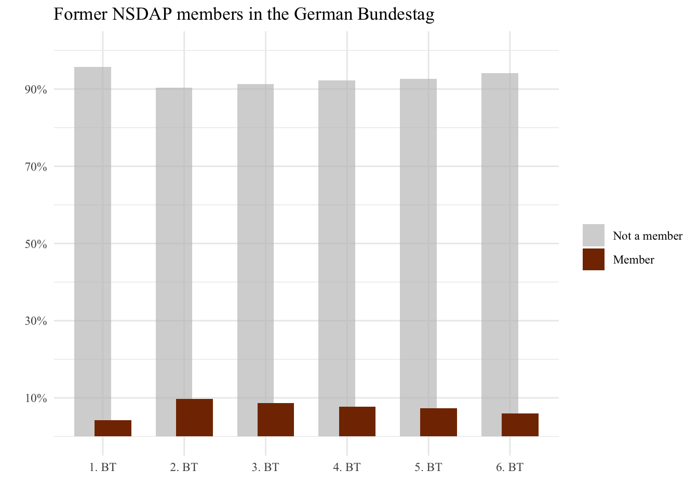
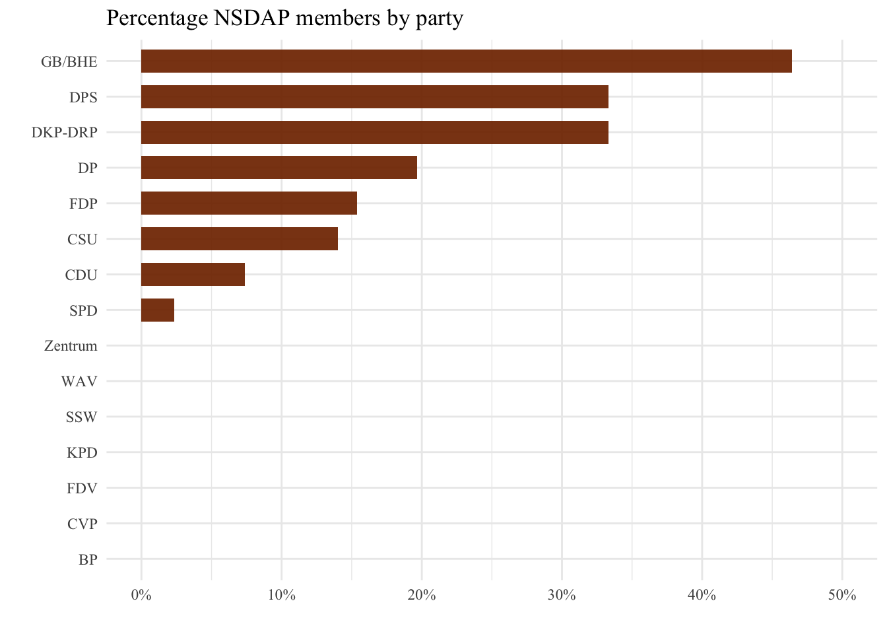
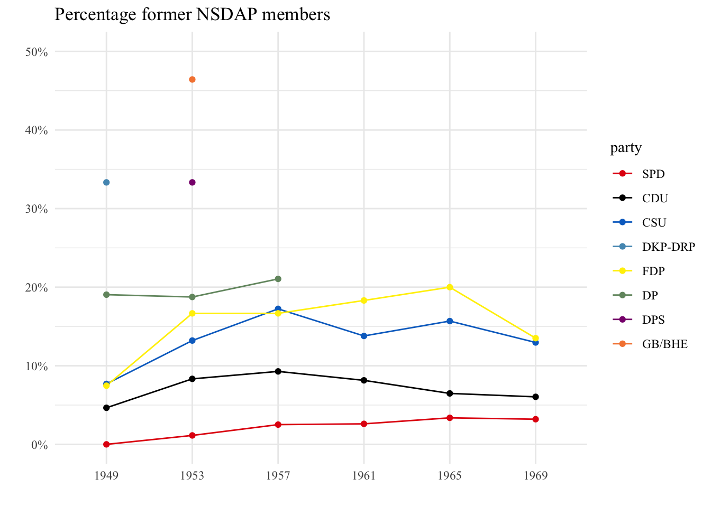

Chapter 3 Data Visualization
3.1 Data Wrangling
# packages ---------------------------------------------------------------------
library(tidyverse)
library(rio)
# download data ----------------------------------------------------------------
nazisbrd <- import("/Users/danielkuhlen/Desktop/privat/projekte/nazi.parlamente/nazisbrd.RDS") %>%
select(wikitag, nsdap.membership)
btmember <- import("btmember.RDS") %>%
select(name, wikitag, party, voteshare, legperiod)
# datawrangling ----------------------------------------------------------------
btmembernazi <- left_join(btmember, nazisbrd, by = "wikitag") %>%
mutate(nsdap.membership = ifelse(is.na(nsdap.membership), 0, 1),
party = ifelse(party == "unabhängig", "independent", party),
voteshare = ifelse(voteshare == "", NA, voteshare))3.2 Former NSDAP by legislative period
# datavisualization -----------------------------------------------------------
# 1) Percentage of NSDAP members per legislative periode
btmembernazi %>%
group_by(legperiod) %>%
count(nsdap.membership) %>%
mutate(percent = n / sum(n),
nsdap.membership = factor(nsdap.membership, levels = c("0", "1"),
labels = c("Not a member", "Member"))) %>%
ggplot(aes(x = legperiod, y = percent, fill = nsdap.membership)) +
geom_bar(stat = "identity",
position = position_dodge(width = .5)) +
labs(x = "",
y = "",
title = "Former NSDAP members in the German Bundestag",
legend = "") +
guides(fill = guide_legend(title = NULL)) +
scale_fill_manual(values = c("Not a member" = "#C0C0C0AA", "Member" = "#823200")) +
scale_x_discrete(limits = c("1", "2", "3", "4", "5", "6"),
labels = c("1. BT", "2. BT", "3. BT", "4. BT", "5. BT", "6. BT")) +
scale_y_continuous(limits = c(0, 1),
breaks = c(0.1, 0.3, 0.5, 0.7, 0.9),
labels = scales::percent) +
theme_minimal() +
theme(text=element_text(family="Times New Roman"))
The data showing that between 4-10% of German Bundestag members during the first six legislative periods were former members of the National Socialist German Workers’ Party (NSDAP) provides important insight into post-World War II German politics. This highlights the persistence of political polarization and the ongoing challenges in the country’s process of democratization and denazification. The fact that a significant portion of the legislative body was composed of former NSDAP members, even in the years immediately following the end of the war, raises questions about the success of efforts to fully remove the influence of the Nazi party and promote democratic values in the country.
3.3 Former NSDAP by party
# 2) Percentage NSDAP members by party
btmembernazi %>%
filter(party != "independent") %>%
group_by(party) %>%
summarize(total_members = n(), nsdap_members = sum(nsdap.membership == 1),
nsdap_percent = nsdap_members/total_members) %>%
arrange(desc(nsdap_percent)) %>%
ggplot(aes(x = reorder(party, nsdap_percent), y = nsdap_percent, fill = party)) +
geom_col(fill = "#823200EE",
width = 0.65) +
scale_y_continuous(limits = c(0, .5),
breaks = c(0, 0.1, 0.2, 0.3, 0.4, 0.5),
labels = scales::percent) +
labs(x = "", y = "",
title = "Percentage NSDAP members by party") +
scale_fill_discrete(name = "Party", guide = "none") +
coord_flip() +
theme_minimal() +
theme(text=element_text(family="Times New Roman"))
The second plot provides an analysis of the percentage of former NSDAP members in different political parties in the German Bundestag for the first 6 legislative periods. The data reveal that the right-wing parties were a catch basin for former NSDAP members and thereby provided an institutionalized oppprtunity for them to reproduce the nazi ideology in the bundestag. According to the data, the still relevant parties FDP, CDU, CSU and SPD all had some former members of the NSDAP in their ranks in the first six legislative periods of the German Bundestag. The FDP had a percentage of 15%, while the CDU had 7% and the CSU had 14%. Indicating that even these parties, which were not considered to be right-wing extremist, were riddled with nazis. However, the data shows that the SPD had a relatively low percentage of former NSDAP members among its ranks in the first six legislative periods of the German Bundestag, with only 2%. This low representation can be seen in the context of the SPD’s history during the Nazi period, as the party was banned and persecuted by the Nazi regime. Despite this repression, many SPD members continued to resist the Nazi regime. This history and the SPD’s political ideology, as a center-left party, was distinct from that of the NSDAP, which likely contributed to the lower representation of former NSDAP members in its ranks.
3.4 Former NSDAP by party and legislative periods
# 3) Percentage NSDAP memmbers by party over time
btmembernazi %>%
group_by(legperiod, party) %>%
summarize(total_members = n(), nsdap_members = sum(nsdap.membership == 1),
nsdap_percent = nsdap_members/total_members) %>%
filter(party %in% c("GB/BHE", "DPS", "DKP-DRP", "DP", "FDP", "CSU", "CDU", "SPD")) %>%
ggplot(aes(x=legperiod, y=nsdap_percent, color = party)) +
geom_line() +
geom_point() +
scale_y_continuous(limits = c(0, .5),
breaks = c(0, 0.1, 0.2, 0.3, 0.4, 0.5),
labels = scales::percent) +
scale_x_discrete(limits = c("1", "2", "3", "4", "5", "6"),
labels = c("1949", "1953", "1957", "1961", "1965", "1969")) +
scale_color_manual(values = c("SPD" = "#E3000F", "CDU" = "#000000",
"CSU" = "#0570C9", "DKP-DRP" = "#5398BE",
"FDP" = "#FFEF00", "DP" = "#73956F",
"DPS" = "#8A1C7C", "GB/BHE" = "#F5853F")) +
labs(x = "", y = "",
title = "Percentage former NSDAP members") +
theme_minimal() +
theme(text=element_text(family="Times New Roman"))
The plot reveals that there was a steady increase in the percentage of former NSDAP members in all still relevant parties (SPD, CDU, CSU, FDP) 1960. Unlike our fist intuition that most former NSDAP members were part of the first Bundestag former members seemed to had an easier access into these parties the further their crimes were in the future. How this is affected by specific policies e.g. that many crimes were barred by the statute of limitations as of 1959 (Verjährung) or the decreasing influence of the allies could be subject to further research.
3.5 Outlook
This project aims to provide a preliminary understanding of the presence of former NSDAP members in the German Bundestag over time. While the goal is to present the data in a clean and usable format, and to provide some basic visualizations, it is not meant to be a comprehensive analysis. Instead, the main objective is to make the data freely available for further research and investigation. The project serves as a starting point for further examination of this important and complex issue.
We would be happy to see if somebody could use this data in a meaningful way.